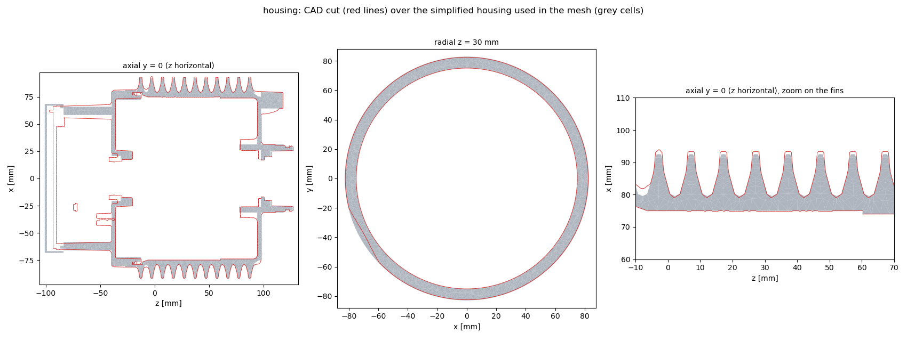
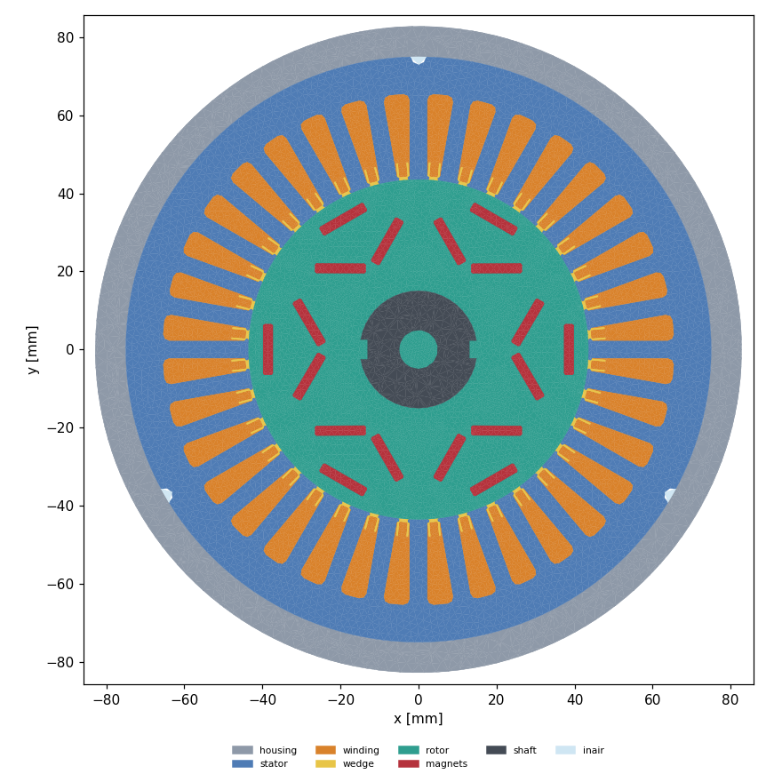
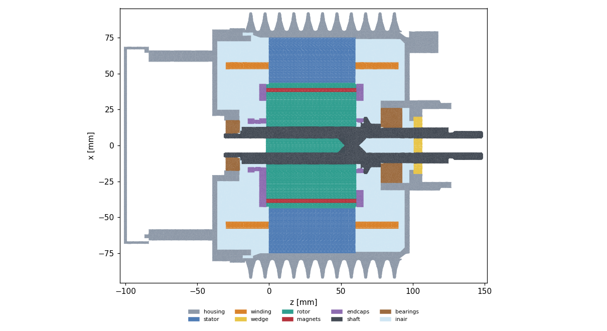

Geometry
CAD check, part map, and what was kept, rebuilt, simplified or dropped, with reasons.
CAD check and part map
S1 CAD check and part map
- Inventory script:
scripts/u666_cadinv.py, outputmesh/u666/inv.json. The STEP import takes 18 min; the BREP cache ismesh/u666/u666.brep. - Global bbox: x -100..246, y -647..98, z -101..149 mm. The phase cables reach y -647.
- Part map:
- Stator: KE250030_1 ×173 laminations, OD 150, z -0.4..60.2.
- Rotor: KE250110_1 ×180, OD 85.8, z -2.2..60.8.
- Magnets: KE250130 ×54, r 23.9–40.3.
- Brass end caps: KE250150 (z 60.8–65.8) and KE250370 (z -10..-2); nut KE250320.
- Shaft: GE250300.
- Bearings: 6205-2RSH front (z 78–93), SKF 6003-2Z rear (z -30..-20).
- Housing: KE250089_1 (714 cm³, OD about 200). Front seat: KE250269.
- Rear cover: KE250179_1 (270 cm³). Rear sleeve: KE250380.
- Rear cap and plate: KE250200 / KE250300.
- Liners: KE250520 ×36 (r 45.5–66.2). Wedges: KE250530 ×36 (r 44–48).
- CAD winding: KE250510 (747 cm³, representative only).
- Dropped:
- the 3 phase cables (GE250410/420/430) and the gland/connector (GE250480);
- screws and washers; the circlip; the seal K2200050;
- the sensor (KE250190) and the encoder (KE250340/310);
- the terminal-block small parts.
- Problem: plane-face sampling for the radii gave wrong values (parametric bounds go past the trimmed faces). Only the cylindrical-face radii were used.
Part map: kept, rebuilt, simplified, dropped
| Part | CAD | In the model | Why |
|---|---|---|---|
| Stator | KE250030_1 x173 laminations | ONE lamination face extruded z -0.35..60.2 | user decision; no 173-body fragment |
| Rotor | KE250110_1 x180 | extruded z -2.2..60.8, gap annulus r 42.6 fused | removes overlapping facets at the OD |
| Magnets | KE250130 x54 | 18 extruded columns (segment 1) | 3 axial segments merged |
| Winding | KE250510 CAD blob (747 cm3) | slot profile extrusion + end-winding shells | CAD blob is only representative; 4.7x too much end volume |
| Wedges | KE250530 x36 | clipped to the stack, merged with the slot opening | rebuild; 9.5 cm3 |
| Liner | KE250520 x36 | not meshed: contact layer R 1.67e-3 | 0.25 mm |
| Seal | K2200050 lip seal | plug primitive: disk r 21, z 100.5..106.5 (4.9 cm3) | CAD seal broke the fragment; KNOB |
| rpocket | rotor pockets | air cylinder r 42.45 over the rotor, k 0.03 | otherwise merged into inair (optimistic) |
| End caps | KE250150/370 brass + nut | kept | |
| Shaft / bearings | GE250300 / 6205, 6003 | kept (solid ring bearings) | |
| Dropped | cables, gland, screws, circlip, sensor, encoder, terminal small parts | - | no thermal role or unmeshable |
Simplified housing vs the CAD
The CAD housing (28 pieces, B-spline fins, 350 blends) could not be meshed (gmsh PLC errors, OCC defeature hangs, snappy fails, see Mesh). A housing built from planes, cylinders and cones replaces it (scripts/u666_housing_simple.py, knob dict K).

| Quantity | CAD | Simplified | Note |
|---|---|---|---|
| housing (8 solids) | 1109.8 (CAD run) | 1042.6 | -2 % (lugs, feet, screws, blends dropped) |
| outer skin area (cavities filled) | 2927 cm2 | 2763 cm2 | -5.6 %; terminal box +5.9 % (fallback cap), without the box +2.5 % |
| fin area | CAD | +1 % | fin profile rebuilt from measured half-widths |
| stator fit bore r 75.0, z -6.3..60.2 | exact | exact | kept |
| bearing seats | exact | exact | kept |
| Housing part | volume [cm3] |
|---|---|
| housing_body | 693.9 |
| seat_front | 19.0 |
| seat_rear | 4.1 |
| oring | 2.1 |
| rear_cover | 269.6 |
| terminal_box | 49.0 |
| gasket | 3.6 |
| gland | 1.2 |
Region layout


Lamination extrusion, wedges, seal plug, rpocket, end-winding shells
- Stack: z [-0.35, 60.2], length 60.55 mm, bore r 43.53, stator OD r 75.0, rotor r 42.88, gap 0.65 mm.
- Slot area to bore 106.5 mm2; meshed slot winding 101.65 mm2 (Motor-CAD 96.67 with liner); rho and k_ax scaled by 85.54/101.65.
- End-winding shells: r_mid 55.5 mm, t 5.17 mm, overhang 29.95 mm; homogenised volume 108.0 cm3, copper 160.6 cm3. CALIBRATION KNOB
| Region | volume [cm3] |
|---|---|
| bearings | 32.2 |
| endcaps | 36.8 |
| housing | 1048.5 |
| inair | 939.6 |
| magnets | 36.5 |
| rotor | 245.5 |
| rpocket | 53.2 |
| shaft | 89.4 |
| stator | 478.2 |
| wedge | 14.4 |
| slot | 220.6 |
| endw | 108.0 |
Defeature inventory
results/u666/defeature_inventory.md
# U666 defeature inventory (subset.brep, thresholds fillet r < 2 mm, chamfer < 2 mm, hole d < 3 mm)
Threads: none modelled in the CAD (cosmetic in Creo). Gasket 74 / terminal cap 114: replaced by prisms in u666_geo.py.
| part | tag | V cm3 | fillet/round n | r min-max mm | area mm2 | chamfer n | w min-max mm | area mm2 | hole n | d min-max mm | area mm2 |
|---|---|---|---|---|---|---|---|---|---|---|---|
| shaft | 41 | 89.4 | 15 | 0.50-1.50 | 424 | 38 | 0.39-1.65 | 676 | 0 | - | 0 |
| housing | 39 | 714.3 | 150 | 0.50-1.00 | 1043 | 60 | 0.35-1.99 | 3521 | 0 | - | 0 |
| housing | 40 | 18.6 | 12 | 0.50-0.50 | 38 | 2 | 1.47-1.47 | 249 | 0 | - | 0 |
| housing | 64 | 269.6 | 203 | 0.20-1.00 | 3055 | 73 | 0.06-1.96 | 1892 | 8 | 2.50-2.50 | 298 |
| housing | 65 | 4.2 | 12 | 0.50-0.50 | 28 | 2 | 1.46-1.46 | 169 | 0 | - | 0 |
| housing | 66 | 3.0 | 4 | 1.40-1.40 | 200 | 0 | - | 0 | 0 | - | 0 |
| housing | 119 | 1.2 | 16 | 0.20-0.90 | 12 | 28 | 0.21-1.79 | 274 | 3 | 0.80-0.80 | 3 |
| endcaps | 42 | 16.6 | 0 | - | 0 | 4 | 1.13-1.13 | 233 | 0 | - | 0 |
| endcaps | 62 | 18.0 | 0 | - | 0 | 4 | 0.49-0.70 | 115 | 0 | - | 0 |
| endcaps | 63 | 2.2 | 0 | - | 0 | 4 | 0.71-0.71 | 137 | 0 | - | 0 |
| screws | 67 | 0.1 | 6 | 0.20-0.20 | 2 | 0 | - | 0 | 6 | 0.40-0.40 | 4 |
| screws | 68 | 0.1 | 6 | 0.20-0.20 | 2 | 0 | - | 0 | 6 | 0.40-0.40 | 4 |
| screws | 69 | 0.1 | 6 | 0.20-0.20 | 2 | 0 | - | 0 | 6 | 0.40-0.40 | 4 |
| screws | 70 | 0.1 | 6 | 0.20-0.20 | 2 | 0 | - | 0 | 6 | 0.40-0.40 | 4 |
| screws | 71 | 1.1 | 0 | - | 0 | 6 | 0.65-1.29 | 63 | 0 | - | 0 |
| screws | 72 | 1.1 | 0 | - | 0 | 6 | 0.65-1.29 | 63 | 0 | - | 0 |
| screws | 73 | 1.1 | 0 | - | 0 | 6 | 0.65-1.29 | 63 | 0 | - | 0 |
| screws | 105 | 0.2 | 0 | - | 0 | 0 | - | 0 | 0 | - | 0 |
| screws | 106 | 0.2 | 0 | - | 0 | 0 | - | 0 | 0 | - | 0 |
| screws | 107 | 0.2 | 0 | - | 0 | 0 | - | 0 | 0 | - | 0 |
| screws | 108 | 0.1 | 0 | - | 0 | 0 | - | 0 | 0 | - | 0 |
| screws | 109 | 0.1 | 0 | - | 0 | 0 | - | 0 | 0 | - | 0 |
| screws | 110 | 0.1 | 0 | - | 0 | 0 | - | 0 | 0 | - | 0 |
| screws | 111 | 0.8 | 2 | 0.50-0.50 | 25 | 4 | 0.65-1.04 | 45 | 0 | - | 0 |
| screws | 112 | 0.8 | 2 | 0.50-0.50 | 25 | 4 | 0.65-1.04 | 45 | 0 | - | 0 |
| screws | 113 | 0.8 | 2 | 0.50-0.50 | 25 | 4 | 0.65-1.04 | 45 | 0 | - | 0 |
| screws | 115 | 0.9 | 4 | 0.30-0.50 | 33 | 6 | 0.65-1.29 | 72 | 0 | - | 0 |
| screws | 116 | 0.9 | 4 | 0.30-0.50 | 33 | 6 | 0.65-1.29 | 72 | 0 | - | 0 |
| screws | 117 | 0.9 | 4 | 0.30-0.50 | 33 | 6 | 0.65-1.29 | 72 | 0 | - | 0 |
| screws | 118 | 0.9 | 4 | 0.30-0.50 | 33 | 6 | 0.65-1.29 | 72 | 0 | - | 0 |
Geometry steps (log)
S4 Geometry simplification (GEO agent)
- Attempt 1 (15:59) took over 50 min: it intersected the B-spline CAD winding with slabs. That approach was dropped.
- Attempt 2 stalled for more than 30 min after the BREP load (deleting about 450 solids, or the magnet sections).
- USER decision: build each lamination stack from ONE lamination face, extruded over the stack length.
- Stator: z -0.35..60.2. Rotor: z -2.2..60.8.
- Slots and pockets come from the profile.
- The 3 axial magnet segments become 18 extruded columns.
- The wedges are clipped to the stack and merged with the slot opening.
- The liner is not meshed; it is the S3 contact layer. The slot winding fills 96.7 mm², with rho scaled by 85.54/96.67 so the copper mass and heat capacity are exact.
- Winding rebuilt (the CAD body was deleted):
- slot profile extruded over the stack;
- end windings as rings: shells about 5 mm thick at the slot mid-radius, overhang about 30 mm (matching the CAD).
- Copper: in-slot 103.6 cm³ plus end windings 57.0 cm³ = 160.6 cm³ = 36 × 47.51 × 187.76/2.
- The end-winding homogenised volume is 107.9 cm³ (54 cm³ per end).
- CALIBRATION KNOB: the shell thickness, overhang and radius are parameters, tuned against the test.
- Tip applied: save a subset BREP of the needed solids only.
- Status: in progress (
mesh/u666/geo.log). - 18:08 GEO: fix for the stall. gmsh
occ.removeis O(N²) on the 599-solid model: recursive removal stalled for more than 30 min, and non-recursive unbinding took 5 min for the faces alone.scripts/u666_subset.pynow hides everything, shows only the needed solids and exports withGeometry.OCCExportOnlyVisible=1, in 49 s. The kept solids are 1 stator lamination, 1 rotor lamination, 18 magnets (segment 1), the housing parts (8), shaft, end caps and nut, seal, 36 wedges and 1 liner. Output:mesh/u666/subset.brep+subset.json.u666_geo.pyloads only the subset. - 19:20 GEO: regions built from the subset (subset 47 s, parts 5 min, fragment 10 min). Problems and fixes:
- (1) The kept rotor lamination sat at z 39.8, so the extrusion ran past the stack. Fix: translate the profile to z -2.2.
- (2) The inner end-space air was connected to the outside air. Section plots (filled, at 0/90/45° and z -65) show that the terminal box has a flat wall with 3 cable-gland bores of about 20 mm, open once the cables and glands are dropped. Fix: a 10 mm Al slab along that wall (z -90..-40) closes the bores. Screws stay as housing plugs (they fill their holes).
- (3) The slot annulus ran to r 74.99, which filled the stator OD notches with winding. Fix: the slot region now ends at r 66 (slot bottom 65.5), and the notches stay air.
- Cavity rule: pockets bounded only by housing (grooves, thread ends) are filled with housing. Pockets bounded only by rotor/magnets/endcaps/shaft become the
rpocketzone (still air, k 0.03), and the rest isinair. - 20:40 GEO: the leak remains after the bore plugs (fit clearances that are too small to locate). Switched to the old-pipeline internal-air envelope: inair = space no part claims inside 3 cylinders that end inside the walls. They are the front end space r 77.4 / z 61..96.5, the rear end space r 75.4 / z -36.7..-1.1, and the terminal box r 72.6 / z -91..-36, cut at the gland wall. Enclosed leftover air pieces also go to inair, except pockets bounded only by the rotor (rpocket) or only by the housing (filled).
- Problem: the first try put envelope faces coincident with CAD/stack faces, and the OCC fragment returned overlapping solids (region volumes summed to the box + 1.6 L). Fix: odd radii and z values, plus a volume-closure check printed in geo.log.
- 20:40 GEO: CAD winding KE250510 measured on its own subset (
results/u666/geo_cadwinding.json): - In-slot 227.6 cm³ (fills the slot, including liner and wedge space). It overlaps the liners by 14.1 cm³, the wedges by 6.5 cm³, and the stator by 0.16 cm³ (negligible).
- End windings: front 255.8 cm³ (z 60.2..90.15, overhang 29.95 mm); rear about 256 cm³ (overhang about 30 mm, plus a 6.7 cm³ lead to the terminal box).
- The CAD end blobs are about 4.7× the Motor-CAD end-winding volume (54 cm³ per end at fill 0.528), confirming that the body is only representative.
- 20:40 GEO: slot area. CAD slot to the bore = 106.5 mm²; above the slot opening (r 44) = 105.5 mm²; minus the CAD wedge (3.62 mm²) = 101.9 mm², against Motor-CAD winding + liner 96.67 mm² (+5.4 %). The meshed slot winding is 101.65 mm² per slot (221.58 cm³). In
u666_make_case.py, slot rho, the copper fraction and k_axial are scaled by 85.54/101.65 (A_SLOT_MESH), so the copper mass and axial conductance match Motor-CAD. - 20:43 MESH agent: inair-air leak closed (was 12991 mm2). Shared faces located from the brep (face adjacency):
- (a) terminal-box envelope: 2 pieces (25.2 + 39.6 cm3) of the r 72.6 cylinder lie OUTSIDE the box walls (touch only housing + outside air, 9038 mm2 incl. the z -91.1 end faces) -> outside air.
- (b) front shaft exit z 96.5-106.5: the seal was mapped to inair (3290 mm2 to air). Seal is now its own region
seal(2.88 cm3, polymer: prep_base merges it into the wedge zone, k 0.2); a 0.1 cm3 seal piece touching only air (spring) -> air. - (c) shaft front centre bore r 5, z 62.8-96.5 (2.39 cm3), open to outside -> outside air (79 mm2).
- (d) hexagonal through-hole (47 mm2) in the terminal-box cap at (-12.0, 32.9, z -91.1): plugged with a housing cylinder r 4.6 x 1 mm (+0.06 cm3 housing).
- Rule in u666_geo.py: an internal-air piece that touches outside air but no other internal air is outside air (2 passes).
- Also: rotor-pocket air (8 pieces, 48.6 cm3) is now
rpocket(still air k 0.03, rule allows the open pocket ends); before it was lumped inair (k ~0.4, optimistic). - Result: inair-air contact 0.0 mm2, closure exact 360000 cm3. Regions cm3: inair 1403.7, rpocket 48.6, seal 2.9, housing 1108.9, air 356180 (+67 cm3), others unchanged.
- Tried and reverted: envelope ends moved 0.5 mm into the stack (to remove the 0.15 mm slab beyond the rotor end) -> overlapping fragment (+1.6 L), as in GEO's first try.
3D
See the 3D viewer page (geometry viewer pending, see handoff).
Generated 2026-10-24 14:23 by scripts/u666_site.py from results/u666/steps_log.md and the case data.